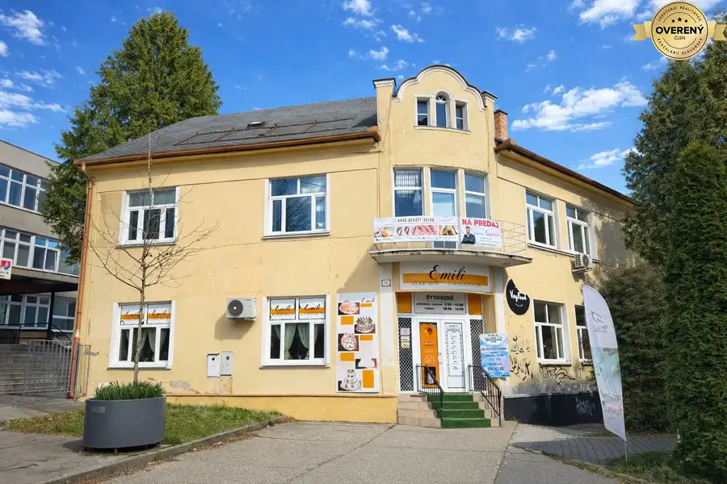
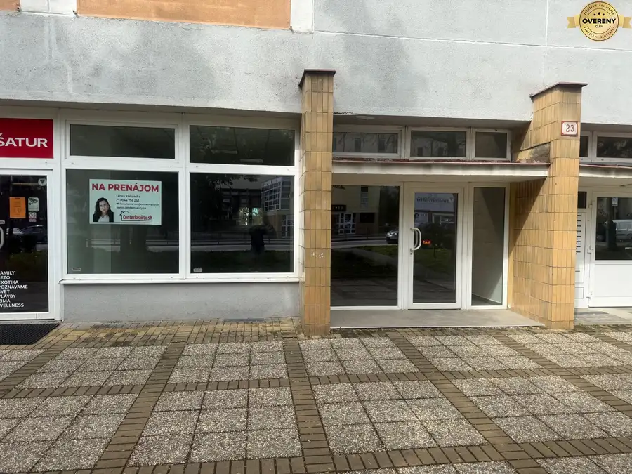
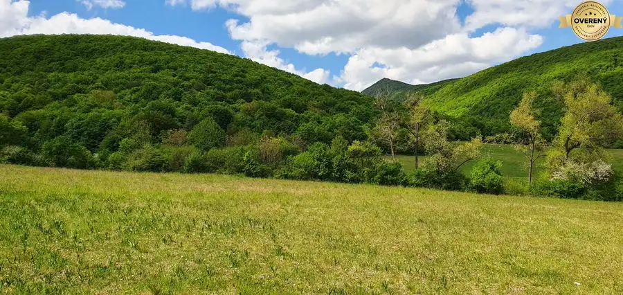

Dvojizbový byt mestská časť Zapotôčky - Prievidza
Prievidza
- Dispozícia2-izbový
- Plocha54 m²
- Poschodie6. z 7
O nehnuteľnosti
Ponuka útulného bytu, ktorá je pripravená práve pre Vás!!!!
Center Reality. sk - Vám ponúka na predaj veľmi príjemný byt po čiastočnej rekonštrukcii. Byt je rozlohou členený na 2 samostatne nepriechodne izby a nachádza sa na 6 poschodí v 7 poschodovom bytovom dome na ulici A.Bednára v meste Prievidza . Bytový dom prešiel kompletnou rekonštrukciou, ktorá spočíva vo výmene vchodových dverí a okien za plastové, zateplenie obvodového plášťa domu, výmena všetkých rozvodov v stúpačke každého bytu,. Parkovanie bez rezidenčných poplatkov je možné priamo pred bytovým domom. Predávaný byt je v osobnom vlastníctve. Byt si prešiel čiastočnou rekonštrukciou.
Predávaný byt sa nachádza na 6 poschodí s výťahom z 7 celkovo. Jeho rozloha 54 m2, je maximálne využitá pre potreby bývania viac-člennej rodiny. Byt pozostáva zo vstupnej chodby, samostatnej kuchyne so špajzou a jedálenským kútom,samostatnej nepriechodnej spálne, taktiež obývačka s jedným vstupom. samostatná murovaná kúpeľná s rohovou vaňou a miestom na práčku a samostatné wc s umývadlom. Byt je situovaný na južnú stranu bez balkónu.
V byte sú plastové okná, laminátové plávajúce podlahy, dlažba. Steny stierky. V byte bolo nanovo vymurované a dispozične vyriešené jadro s rohovou veľkou vaňou,
Zaujala Vás táto ponuka a radi by ste si túto nehnuteľnosť pozreli osobne? Obhliadky sú možné v Pondelok, Stredu a Piatok v poobedňajších hodinách od 15 do 17 hod
Čo dodať na záver ?
Nízke prevádzkové náklady na bývanie.
Byt sa nachádza vo výbornej lokalite mesta s veľmi dobrou a blízkou dostupnou občianskou vybavenosťou. Byt je v zachovalom stave pripravený rovno k užívaniu novým majiteľom. Možnosť okamžite sa nasťahovať. K bytu nemám žiadne výhrady a na kúpu môžem iba odporúčať.
Ak Vás moja ponuka zaujala, tak ma prosím kontaktujte na tel. čísle alebo na e - mail:
V prípade kúpi na hypotéku, Vám všetko potrebné vybavíme k Vašej maximálnej spokojnosti .
Parametre
| Celková rozloha | 54 m² |
|---|---|
| Úžitková plocha | 54 m² |
| Poschodie | 6 |
| Počet poschodí | 7 |
| Počet izieb | 2 |
| Dátum zverejnenia | 30. 6. 2022 |
Kde to je
Mohlo by Vás zaujímať

Domy a budovy10 399 900 €Investícia v srdci Prievidze, ktorá má ešte čo ponúknuť!!!! Prievidza 12-izbový787 m² 787 m² | 3 podlažia | centrum mesta | vlastné parkovanie | 399 900€ Hľadáte investičnú nehnuteľnosť, kde nemusíte začínať úplne od nuly? V centre…
Nebytové priestory10 1 075 €Prenájom obchodného priestoru v centre mesta Prievidza Prievidza 118 m² Center Reality.sk Vám, so súhlasom majiteľa ponúka na prenájom obchodný priestor v centre mesta Prievidza na ulici A. Hlinku Nachádza sa na prízemí…
Pozemok3 361 056 €Stavebný investičný pozemok obec Nitrianske Sučany okres Prievidza Nitrianske Sučany 11283 m² Center Reality.sk Vám v exkluzívnom zastúpení so súhlasom majiteľa predstavujeme jedinečný pozemok _ INVESTIČNÁ PRÍLEŽITOSŤ – POZEMKY PRE BUDÚCU…